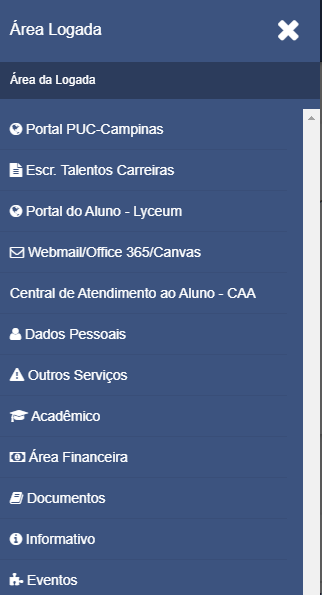
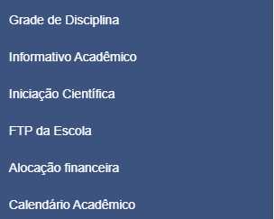
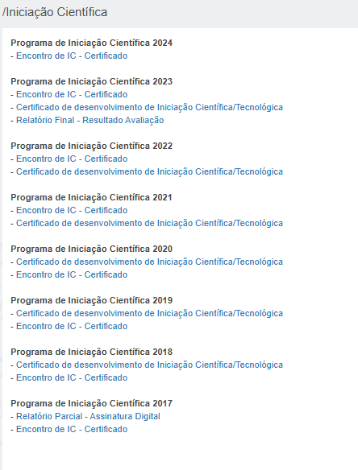

Já é aluno?
Siga esses passos:
1: Entre na Área Logada

2: Clique em Acadêmico

3: Depois em Iniciação Científica

O que é Iniciação Científica?
A Iniciação Científica é um processo de aprendizado onde estudantes, geralmente de graduação, começam a se envolver com a pesquisa científica. Durante esse processo, eles têm a oportunidade de desenvolver habilidades para investigar, analisar dados e entender metodologias científicas, sob a orientação de um professor ou pesquisador experiente.
Em resumo, é uma experiência prática de pesquisa, onde o estudante explora um tema específico, coleta e analisa informações, e aprende como contribuir para o avanço do conhecimento em uma área.
Iniciação Científica na PUC Campinas:
A participação dos estudantes em atividades de pesquisa científica ou tecnológica, no âmbito dos Grupos de Pesquisa da Universidade, desperta vocação científica e incentiva talentos potenciais.
Propicia a este aluno de Iniciação Científica a vivência e interação com toda a cadeia da pesquisa no ambiente universitário, com outros alunos, com mestrandos, doutorandos, pós-doutorandos e pesquisadores da PUC-Campinas.
A realização do Encontro de Iniciação Científica e do Encontro de Iniciação em Desenvolvimento Tecnológico e Inovação pela Pró-Reitoria de Pesquisa e Pós-Graduação, qualifica, incentiva, socializa e fortalece a Iniciação à Pesquisa na Universidade em todas as áreas do conhecimento.
Os alunos também participam de palestras e minicursos, socializam os Planos de Trabalhos realizados e são avaliados pelos docentes pesquisadores da Universidade e por Bolsistas de Produtividade do CNPq.
Processo seletivo Iniciação Científica na PUC Campinas:
Manual da Iniciação Científica 2024
Calendário Voluntários 2024/2025
Manual Voluntários 2024/2025
Planos de Trabalho para o período de setembro/2024 a agosto/2025
Clique Aqui